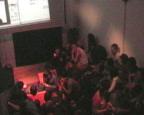
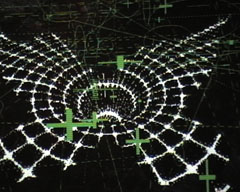

______________________________________________________________________
\\\\\\\\\\\\\\\\\\\\\\\\\\\\\\\\\\\\\\\\\\\\\\\\\\\\\\\\\\\\\\\\\\\\\\
bienvenido a todos a la segunda presentacion de :
DORKBOT BARCELONA
"gente que hace cosas raras con electricidad"
http://www.dorkbotbarcelona.org
http://www.dorkbot.org
El sabado 17.7.2004 | 21:00-00:00
@ KBB (Kültur Büro Barcelona)
Calle Joaquim Costa 24, 4o, edificio industrial
www.kbb.org.es | info@kbb.org.es
0034 93 442 06 95
Jonah Brucker-Cohen+Katherine Moriwaki : presentación
de su trabajo
Nice-Noise/Alex Posada : presentación de su trabajo
ctrl.z.jones y Michiaki Abiko: LOS CAMPOS INFERIORES
Peter Beyer : experimental cinema
______________________________________________________________________
\\\\\\\\\\\\\\\\\\\\\\\\\\\\\\\\\\\\\\\\\\\\\\\\\\\\\\\\\\\\\\\\\\\\\\
Jonah Brucker-Cohen +Katherine Moriwaki
http://www.coin-operated.com/
http://www.kakirine.com
Los projectos de Jonah Brucken-Cohen tocan muchas areas del arte digital:
robótica, physical networks, subversive networks, social software,
physical displays, audio spaces, mobiles...Ultimamente ha sido invitado
a todos los festivales de media arte para dar presentaciones,talleres
(midi scratchyard..) y hacer performances como "simple text"
basado en la tecnología de sms. Jonah es Research Fellow en Media
Lab Europe en Dublin. Sus articulos han sido publicado por WIRED, rhizome.org
etc. El era el co-fundador de Dublin Art and Technology Association (DATA
Group)
Katherine Moriwaki es artista y investigadora de networks, wearables,
espacio publico y su relación con las nuevas tecnologias.
Referenciás:
Ars Electronica (02, 04), The Whitney Museum of American Art: Artport
(2003), DEAF(2003), SIGGRAPH (2000), VRML-Art 99, Art in Motion II in
Los Angeles (2000), F.I.L.E. Festival in Brazil, Nordic Interactive Conference
(ElectroHype) festival in Copenhagen (2001), Machida City Museum
of Graphic Arts in Tokyo, ISEA (02,04), Soundtoys.net, Transmediale (02,04),
European Media Arts Festival (1999), and the 8th Annual New York Digital
Salon (2000).
______________________________________________________________________
\\\\\\\\\\\\\\\\\\\\\\\\\\\\\\\\\\\\\\\\\\\\\\\\\\\\\\\\\\\\\\\\\\\\\\
NICE-NOISE / Alex Posada
http://www.nice-noise.org
Somos una formación adentrada en la producción de obras
musicales,
imagen y sonido experimental, instalaciones y en el diseño y fabricación
de artefactos aplicados al arte audiovisual. Refleja la sintesis de una
alianza
que desde la infancia es alimentada por la música, la ciencia y
el arte.
Recientemente hemos creado Nice-Noise Lab, grupo de investigación
dedicado
al desarrollo de dispositivos interactivos autónomos para aplicaciones
artísticas,
lúdicas, medios publicitarios, ingeniería y comunicaciones.
______________________________________________________________________
\\\\\\\\\\\\\\\\\\\\\\\\\\\\\\\\\\\\\\\\\\\\\\\\\\\\\\\\\\\\\\\\\\\\\\
ctrl.z.jones y michiaki abiko: LOS CAMPOS INFERIORES
LOS CAMPOS INFERIORES es una colaboración entre ctrl.z.jones y
michiaki
abiko. LIC presenta imagenes historicos del cine sincronizados a musica
electro-acoustica y IDM. LIC interviene en el tiempo real repetiendo y
evolucionando loops para generar un encuentro audiovisual que reorganiza
las
experiencias..
______________________________________________________________________
\\\\\\\\\\\\\\\\\\\\\\\\\\\\\\\\\\\\\\\\\\\\\\\\\\\\\\\\\\\\\\\\\\\\\\
Peter Beyer : experimental cinema
Hidden Star [Dikctov - Peter Beyes]
Estrella escondida-la vas a encontrar despues de la batalla, contigo.
Esta dentro de todos nosotros.
Seguramente puedes iluminarlo.
16mm.10min.b/n.2002
Positiv au/Positiv Kosmos [Gerdes, Weingarten, Beyer]
Imagenes positivas y negativas se encuentran en el espacio libre.
16mm.5min.color.2003
(1:1) [trabajo colectivo]
16mm.8 min.b/n.2003
______________________________________________________________________
\\\\\\\\\\\\\\\\\\\\\\\\\\\\\\\\\\\\\\\\\\\\\\\\\\\\\\\\\\\\\\\\\\\\\\

Katherine Moriwaki
presentado su proyecto de 'wearable computing' + JoseLuis deVicente traduciendo
en directo

Alex Posada aka Nice-Noise con
sus aparatus sensoriales

Alex + Imasaka actuando en final
de dorkbot

Michi
 el
publico
el
publico
PRESENTACIONES
ANTERIORES>>
______________________________________________________________________
\\\\\\\\\\\\\\\\\\\\\\\\\\\\\\\\\\\\\\\\\\\\\\\\\\\\\\\\\\\\\\\\\\\\\\\\\\\\\\\\\\\
bienvenido a todos a la primera presentacion de :
DORKBOT BARCELONA
"gente que hace cosas raras con electricidad"
26.5.2004 | 20:00-22:30
@ ATELIER [Rambla del Raval 49.Barcelona]
http://www.dorkbot.org
http://www.dorkbot.org/dorkbotbarcelona
http://www.dorkbotbarcelona.org
PRESENTACIONES DE
:
Lluis Goomez i Bigorda +Yves Degoyon : Gollum
Brian Mackern: CD-ROM 'INTERFERENCIAS CHAMANICAS'.
HARD DISK: presentacion+performance
SOLU: UKIYO-E /premier de video/
______________________________________________________________________
\\\\\\\\\\\\\\\\\\\\\\\\\\\\\\\\\\\\\\\\\\\\\\\\\\\\\\\\\\\\\\\\\\\\\\\\\\\\\\\\\\\
Lluis Goomez i Bigorda +Yves Degoyon : Gollum
http://gollum.artefacte.org
http://mcs.hackitectura.net/tiki-index.php?page=documento
gollum quiere ser una interfaz web para el proyecto al-jwarizmi, se trata
de
un desarrollo de software libre para la producción distribuida
de contenidos
multimedia en la Red, basado en Pure Data, un entorno gráfico de
programación
para el procesado de audio-video en tiempo real: al-jwarizmi captura y
mezcla
live streams producidos por un enjambre de participantes/productores
geográficamente diseminados.
Lluis Goomez i Bigorda es programador i miembro del colectivo audiovisual
r3
(a.k.a. skeezo), trabaja con pure-data desarrollando aplicaciones para
performances audiovisuales i actualmente esta experimentando la interaccion
de estos softwares con la red de redes, internet.
http://www.artefacte.org/pd
Yves Degoyon es un músico y autor de
software de codigo abierto para el procesamiento de vídeo y sonido
dentro del marco de Pure Data. Un vez motivado por el deseo de crear
y utilizar sus propias programmas para actuaciones sonoras que
serían diferentes del sonido estandardizado del software comercial,
se encontró en el desarrollo de extensiones visuales colaborando
con
Tom Schouten (Bélgica) que se han empleado en varias instalaciones
y
espectaculos.
http://ydegoyon.free.fr
______________________________________________________________________
\\\\\\\\\\\\\\\\\\\\\\\\\\\\\\\\\\\\\\\\\\\\\\\\\\\\\\\\\\\\\\\\\\\\\\\\\\\\\\\\\\\
Brian Mackern : INTERFERENCIAS CHAMANICAS
http://netart.org.uy
[.]cd_rom//interferencias_chamanicas [2004]
Live performance del CD-ROM 'INTERFERENCIAS CHAMANICAS'.
Serie de 23 soundtoys y objetos sonorovisuales reactivos
basados en soundsets compuestos por 13 musicos.
Etapa de un proceso que comenzo en el 2001, es interaccion sensible y
proceso colaborativo con otros artistas/musicos.
Live performance of 'CHAMANIC INTERFERENCES' CD-ROM.
23 soundtoys and image-sound reactive objects
based on soundsets composed by 13 musicians.
Stage of a process that began in 2001, is about sensible interaction and
colaborative process with other fellow musicians/artists.
______________________________________________________________________
\\\\\\\\\\\\\\\\\\\\\\\\\\\\\\\\\\\\\\\\\\\\\\\\\\\\\\\\\\\\\\\\\\\\\\\\\\\\\\\\\\\
HD : presentacion+ performance
http://www.con-area.de
http://www.drgadrga.com
HD music is invented by Kai Taugenichts and Mik@.
The computer is the instrument . The first step is to develope a pick
up for
a hard disk.
The sound is analogical, then using a compter to modify the sound.
The next step is a pickup for a CPU (control processing unit) to explore
the mechanical aspects of digital data.
______________________________________________________________________
\\\\\\\\\\\\\\\\\\\\\\\\\\\\\\\\\\\\\\\\\\\\\\\\\\\\\\\\\\\\\\\\\\\\\\\\\\\\\\\\\\\
SOLU : UKIYO-E
http://www.solu.org
premiere de su ultimo video: UKIYO-E realizado en tiempo real (max/nato)
con la musica de Richard Devine.
El nombre UKIYO-E viene del japones con significado "mundos flotando"
/ "floating worlds" que en los tiempos antiguos referio por
ejemplo a los
mundos de los geishas, algo fuera de la "realidad".
En el video hay imagenes de la gente en Nueva York grabados durante mi
visita
alli justo antes que empezo la guerra. Hay paisajes tambien de Japon,
Sarajevo
y Barcelona, todos cubiertos en el ruido "post_nuclear".
Mia Makela aka SOLU
es agitadora visual y activista cultural Finlandesa establecida en Barcelona.
Se dedica a creacion y performance audiovisual en tiempo real. Ella ha
actuado
en varios festivales incluido Sonar en Barcelona, Cimatics en Bruselas,
Pixelache
en Helsinki, Music Biennale de Zagreb y Transmediale en Berlin. Sus videoclips
experimentales han sido presentado en expocisiones en Estados Unidos,
Europa y Asia. Ella organiza eventos y talleres sobre la cultura audiovisual
y los tecnicos de hackers y ha iniciado dorkbot.org en Barcelona.
_____________________________________________________________________
\\\\\\\\\\\\\\\\\\\\\\\\\\\\\\\\\\\\\\\\\\\\\\\\\\\\\\\\\\\\\\\\\\\\\\\\\\\\\\\\\\\
¿Que es DORKBOT?
Gente que hace cosas raras con electricidad.
Dorkbot es una agrupación mundial de colectivos integrados con
elementos
esenciales para el desarrollo de experiencias bajo el recurso de las nuevas
tecnologías.
Fomentando el trabajo, ayudando a reunir gente interesada tanto en la
comprensión
como en el desarrollo de dichas experiencias. Hasta ahora han surgido
colectivos
de Dorkbot en Nueva York, Londres, Gent, San Francisco, Linz, Melbourne,
Seattle,
Rotterdam, Lisboa, Sofía, Chicago, Los Angeles etc...
Dorkbot es una plataforma abierta:si quieres presentar tus projectos,
performances o ideas manda un mensaje a: dorkbotbcn@dorkbotbarcelona.org
______________________________________________________________________
\\\\\\\\\\\\\\\\\\\\\\\\\\\\\\\\\\\\\\\\\\\\\\\\\\\\\\\\\\\\\\\\\\\\\\\\\\\\\\\\\\\
imagenes de la primera
presentación:



